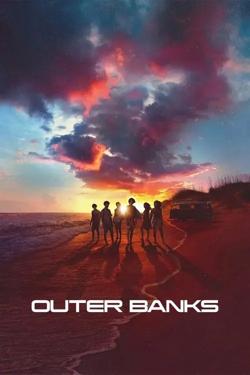

Séries

Stranger Things (4.ª temporada)
Em Stranger Things 4, Mike (Finn Wolfhard) e Eleven (Millie Bobby Brown) também receberam mais espaço para desenvolver seu relacionamento durante a série, lidando com questões que envolvem a perda de poderes da número onze e seu frágil momento como vítima de bullying na nova escola..
Ver mais

Outer Banks
Em uma ilha com moradores pobres e ricos, John B e sua turma vivem aventuras cheias de mistério em busca de um tesouro perdido...
Ver maisSintonia (1.ª temporada)
Criados juntos na mesma favela em São Paulo, Rita, Nando e Doni correm atrás de seus objetivos rodeados pela música, drogas e religião. Cada um deles segue um rumo diferente na vida, mas são reaproximados pela forma amizade que construíram juntos pela periferia de São Paulo.
Ver mais